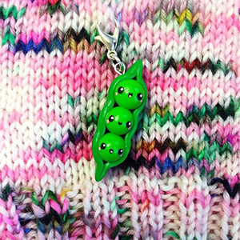
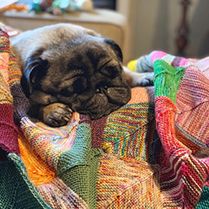

About Inside Number 23
Best Episode to Start with: Episode 38: Kind of a Halloween Episode
Average Episode Length: 60 min
Best Quote: I could knit, and knit, and knit before I die and never have to buy another skein of yarn.
Snyposis: Katie hosts a video podcast about all things knitting. She includes segments like owl mail (yarn she purchased online), what am I wearing, what's on my needles, and dream knitting. Some of her inspirations include her pug Rolly, Harry Potter, and any sort of theatric presentation.
 